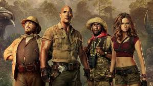
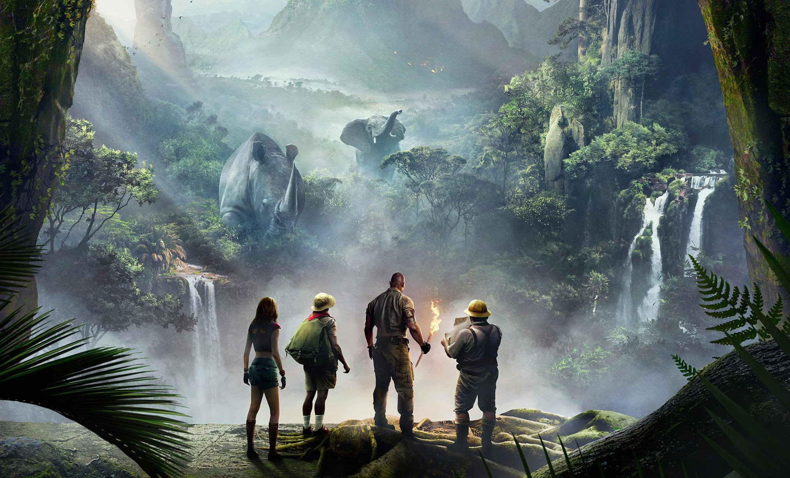
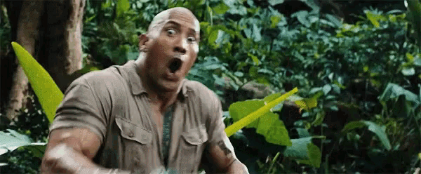
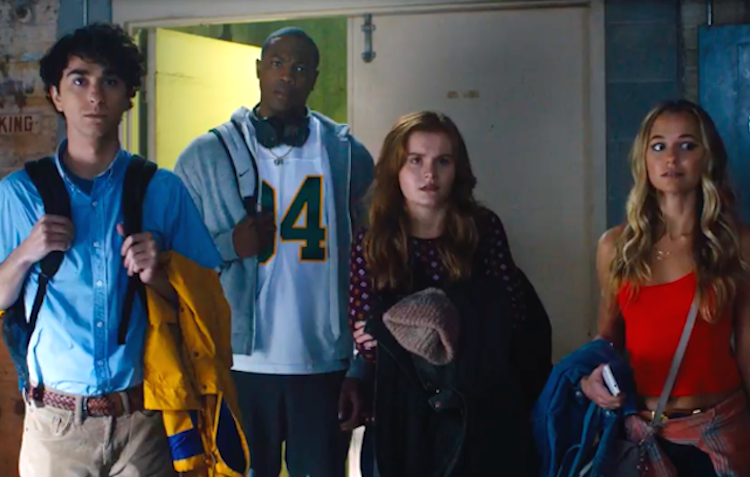

Nem lehet azt mondani, hogy az 1995-ös Jumanji korszakos film lett volna. Chris Van Allsburg azonos című képeskönyvének adaptációja leginkább technológiai szinten szélesítette a határokat (mínusz a majmok), alapötletét leszámítva nem volt sokkal több egyszerű menekülős kalandfilmnél. Ahhoz viszont elég nagy sikert aratott, hogy a sikerre éhező Sony bő húsz év múltán lefújja róla a port, és ismét csatasorba állítsa.
Az mindenképp a Jumanji: Vár a dzsungel javára írható, hogy nem éri be egyszerű újrával, ehelyett alaposan újragondolja az eredeti filmet. Míg Van Allsburg könyvében és annak filmváltozatában egy társasjáték kel életre, azaz a dzsungelben élő állatok szabadulnak el a nappaliban és később a városban, addig az új változat nem egyszerűen fordít a recepten, hanem alapjaiban értelmezi át a "játékélményt". A Vár a dzsungelben ugyanis a gyerekek már egy videojátéknak esnek neki, amely ahelyett, hogy elhozná a vadont a valóságba, inkább őket szippantja be saját dzsungelvilágába. Persze, ennek ígéretét már az eredeti játék is magában hordozta - emlékezzünk csak vissza a Robin Williams által játszott Alan Parrishre, ugyanakkor az is érthető, hogy a folytatásban a társas helyett miért egy konzolt nyüstölnek a srácok: mert a valóságban is ezt tennék.

Szóval az ötlet jó, és még a realizálásában is akadnak egészen jó gondolatok: kár, hogy ezeket nem sikerül konzekvensen végigvinni. A film elején négy teljesen átlagos - értsd: közhelyes - fiatallal ismerkedünk meg, akik a Nulladik óra című film hagyományait követve elzárásos büntetésben részesülnek, és miközben a suli pincehelyiségét takarítják, megtalálják a Jumanji névre hallgató konzolt, ami kb. egy ős-Atarira emlékeztet. Mikor elkezdenek vele játszani, a játék egyszerűen beszippantja őket. Csakhogy nem gyerekekként találják magukat a dzsungel közepén, hanem a játék elején választott avatárjukba bújva. Így lesz a vékonydongájú kockából izomkolosszus (Dwayne Johnson), a nagyra nőtt sportolóból töpszli hordár (Kevin Hart), a magába húzódó lányból csinos harcoslány (Karen Gillam), az iskola beképzelt szépségéből pedig pocakos térképész (Jack Black).

Ha ez nem lenne elég, hőseinknek egyenként három életük van arra, hogy egy kristályt eljuttassanak a dzsungel egyik pontjáról a másikra, és ehhez nem csupán szerzett képességeiket kell maximálisan kihasználniuk, de a siker érdekében egymásra kell támaszkodniuk.
Magyarán a film leginkább a csapatjátékok mintáját követi, és mindeközben ki-kikacsingat a nézőkre is, csakhogy sem ebben, sem a szabálykövetésben nem következetes. A Vár a dzsungel egyik első, egyben legviccesebb pillanatában a hőseink egy cutscene-nel szembesülnek, és hirtelen nem értik, mi ez a mozizás, a később jelentkező bevágásoknál azonban a film már elfeledkezik erről a tudatos kifigurázásról, és simán csak bevágja, amit be kell vágni. Szintén viccesek a filmbe bekevert NPC-k, akik jobbára ugyanazt ismételgetik, és a történet továbbgördítésére szolgálnak, még sincsenek úgy igazán játékosítva: ha hőseink mellükre csapva előhívhatják egy hologram formájában a tulajdonságaikat, akkor magát a világot is jobban fel lehetett volna vértezni játékszerű megoldásokkal - pl. egy glóriával az NPC-k felett.

Karakter tekintetében sem elég körültekintő a film: a figurák központi poénforrása az, hogy teljesen más személyi jegyekkel felvértezett srácok bújnak még náluk is közhelyesebb felnőttek bőrébe. A kocka mindig rácsodálkozik arra, hogy milyen erős, a zárkózott lány arra, hogy milyen szép, az iskola dögje meg arra, hogy nos... ő Jack Black. Igen ám, de a mogorva sportolóból nem lett csendes törpe, akinek maximum a magasságával van baja: Kevin Hart egyszerűen nem tud nem Kevin Hart lenni, azaz nem végigharsogni és -grimaszolni egy filmet. De hát őt ezért is alkalmazzák - logika ide vagy oda.
Persze, mindez nem okozna gondot, ha a kalandok vagy a poénok benyelnének, de míg a látványelemek egy-két kivételtől eltekintve se nem túl meggyőzők, se nem elég izgalmasak, addig a viccek egyenesen szörnyűek. A játékos poénkodás hamar kiesik a képből, helyét pedig elszomorítóan közönséges viccelődés veszi át. Visszatérő elem például az, hogy a Jack Black bőrébe bújt lány állandóan rácsodálkozik arra, hogy neki pénisze van, és ezt nem rest szét is kürtölni. Nem kevésbé alsó régiós az a szekvencia, melyben Black próbálja a visszahúzódó lányt megtanítani arra, hogy legyen szexi, ha már ilyen szép nő bőrébe sikerült bújnia.
